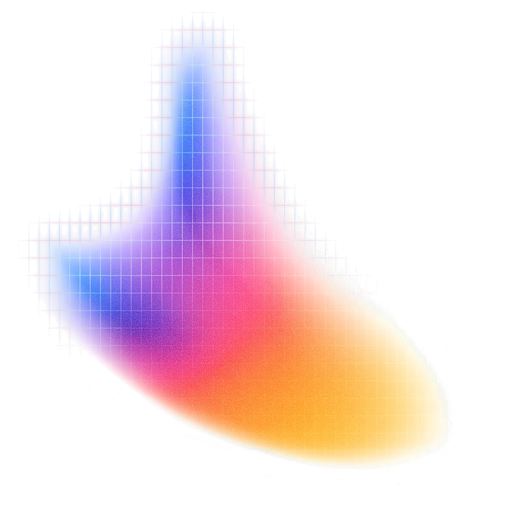
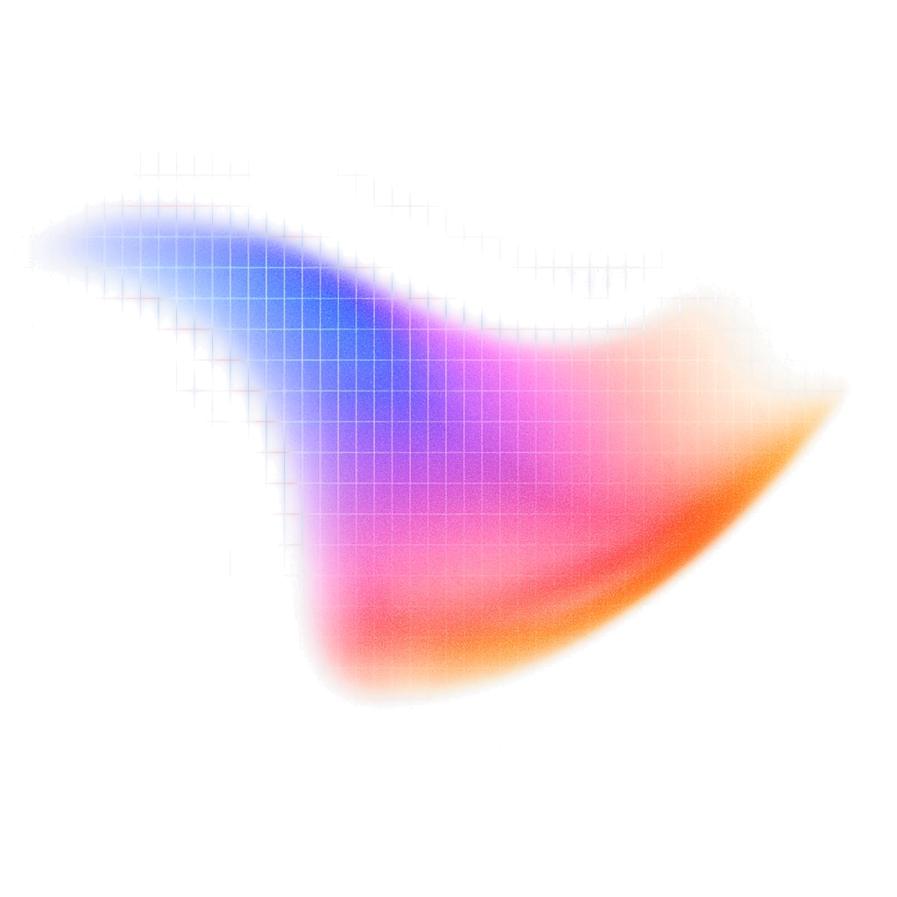

Kan je je eigen cijfers vertrouwen?
Krijg ik twee keer hetzelfde antwoord?
Week 4: tokens en kosten
Overgeslagen: de value chain. Vandaag, na de pauze.
Om 13:30 heb je
Open je AI in je eigen map. Typ:
Check: staan je prompt, je testset en kosten.md in build/? Nee? Zeg het meteen.
De skill context heet nu profiel.
Welke Haiku had je?
Kreeg je 5.5 en rekende je met 4.5? Dan staat je kost tien keer te hoog.
Welke naam staat er: haiku-4-5 of haiku-5-5?
Op Haiku 5.5: geloof de dollars in /cost niet.
Claude Code rekent Haiku 5.5 aan de prijs van Opus. Dat is ± 40 keer te veel.
Zeker Haiku 5.5? Typ /model claude-haiku-5-5
Een student. Dezelfde prompt. Dezelfde website.
Wat veranderde er?
We weten het niet. En dat is de les.
A valt af: de prompt was identiek. B valt af: een model leert niets van je runs.
Daarom vandaag: 3 runs per versie, en het model in je log.
Zo testen bedrijven AI
Veel gevallen, automatisch nagekeken, bij elke wijziging opnieuw.
Jouw testset is dezelfde machine, in het klein.
Vier regels.
Breek je er één, dan zegt je score niets meer.
Run 1 zegt: v2 wint.
Drie runs zeggen: binnen de foutmarge.
Ingetrokken.
T03: v2 fout in 2 van 3 runs. 30 runs samen: $0,078.
Lus 1: je foutmarge
Je laatste versie en de versie ervoor. Zelfde inputs. 3 runs elk. Het model in je tabel.
Zoals bij een peiling: een verschil binnen de foutmarge is geen verschil.
Ingetrokken is geen slecht cijfer.
Duurt het te lang? 5 inputs, voor beide versies dezelfde. Schrijf n = 5.
Plak dit bij je agent

Overlappen ze? → binnen de foutmarge → ingetrokken.
Jouw oud en nieuw: overlappen ze?
"Generate an SVG of a pelican riding a bicycle."
Simon Willison test elk nieuw model met deze ene zin.
Welke pelikaan kwam van welke setup?
Haiku 5.5 low
Haiku 5.5 high
Sonnet 5.5
Opus 5.5
Maximale intelligentie: Fable 5.1, effort max
Beter? Ja. 1.100 keer beter?
Zelfde model. Zelfde zin. Nog een keer.
Haiku 5.5 · effort low · live

Duurder is niet altijd beter.
En hetzelfde model geeft twee keer een andere pelikaan.
Nu op je eigen tool: valt het verschil binnen je foutmarge?
Welk model zet je in productie?
Voor déze taak. Met welke effort.
Dat is de rij Kosten (15%) in je memo.
Twee knoppen.
Meer denkwerk = meer output = meer kost.
in een run: --model · --effort
-c model_reasoning_effort="low"
Begin bij Sonnet. Simpel? Omlaag. Te moeilijk? Omhoog.
Groter model, zelfde score.
Eén fout op één run valt binnen de foutmarge. Kies dan op kost.
Per maand, € = $ × 0,90. Haiku 5.5 zelf berekend: /cost rekent hem te duur.
Je drie setups
Eerst gokken. Schrijf je gok in build/modellen.md vóór je draait.
Kost per run = je input-tokens uit week 4 × inputprijs + output-tokens van deze setup × outputprijs.
Plak dit bij je agent. Vul A, B en C in.

De score van setup B. Klopte je gok?
Valt B binnen je foutmarge? Hand omhoog.
Pauze.
Om 12:10 terug. Dan: wat is je tool waard, met de foutmarge erin?
De value chain, met de foutmarge erin
De mailsorteerder
Week 4, nu met fouten herstellen en een bereik.
Uurkost: €20 bruto per uur ≈ €30 voor de werkgever. Aanname. Bron: Acerta, Securex.
Volume: 5 dagen per week, 220 per jaar.
Zelfde value chain, ander werk
Een accountant vergelijkt twee kwartaalrapporten.
33.000 mails of 480 rapporten: waarde = tijd × uurkost, niet volume.
Je zwakste cijfer is niet je score.
Het is je schatting van het handwerk.
Bouw je value chain opnieuw
In het ontwerp van je post, onder "Mijn value chain, met de foutmarge erin".
Je netto per jaar, als bereik.
En je zwakste schakel: welke?
Al je cijfers op één pagina
Het staat in je pull request, en je bouwt erop verder tot week 12.
Lees het na. Een cijfer dat niet in je bestanden staat? Verzonnen. Weg ermee.
Plak dit bij je agent
Maak een publieke link
Test: open je link in een privévenster. Vraagt hij om in te loggen? Dan is hij nog niet publiek.
De link is publiek. Geen echte namen.
De tien vaakste AI-ismen
Jaag op je eigen AI-ismen
In je posts van week 1 tot 4.
"Deze berekening heeft mijn visie uitgebreid." → "Ik dacht dat één run niets kostte. Bij 1.000 keer mijn volume is het meer dan 100 euro per maand."
Je post
300 tot 500 woorden. Minstens één gemeten cijfer met n.
dashboard.html · foutmarge.md · modellen.md · kosten.md